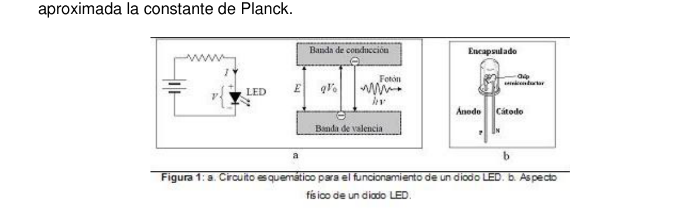
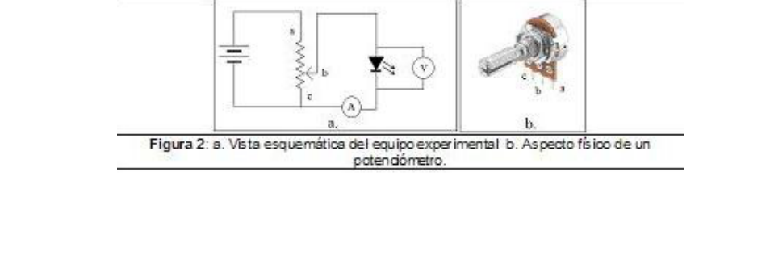
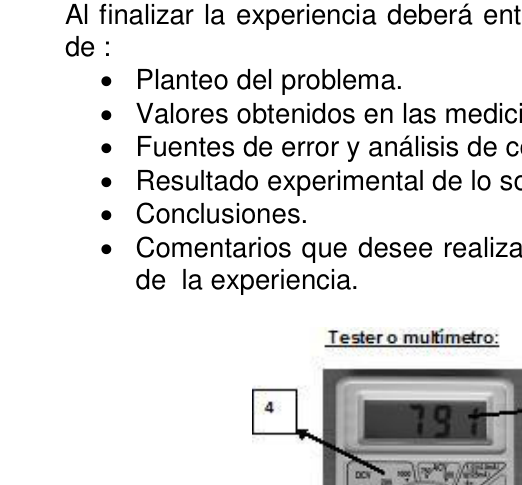

PE14. Colegio Padre Ramón de la Quintana
ENET Nro. 1 Prof. Vicente Aguilera
Colegio Del Carmen y San José
Instituto Superior FASTA Catamarca
Escuela Secundaria Gustavo G. Levene
Escuela Pre-Universitaria Fray Mamerto Esquiú San Fernando del Valle, Catamarca.
DETERMINACIÓN DE LA CONSTANTE DE PLANCK
OBJETIVO: Determinar experimentalmente el valor de la constante de Planck.
INTRODUCCIÓN
En Física existen constantes, denominadas constantes fundamentales, determinadas a lo
largo de la historia de la Ciencia. Entre las que podemos enumerar están la constante de
Gravitación Universal, propuesta por Newton y medida experimentalmente por
Cavendish, la masa y la carga de un electrón, la permeabilidad magnética y eléctrica del
vacío a partir de las cuales se escribe la velocidad de la luz y la constante de Planck,
entre otras.
El surgimiento de estas constantes ha significado un momento de quiebre en la historia
de la Ciencia. Su aparición y la determinación de su valor definitivamente marcaron un
cambio de paradigma; la Física, la Ciencia y el pensamiento humano cambiaron para no
volver a ser lo mismo.
Los valores de las distintas constantes físicas parecen estar finamente sintonizadas y
como resultado de esa sintonización surge el Universo visible. Existe lo que se denomina
el principio antrópico, es decir, la respuesta a la siguiente pregunta: ¿qué pasaría si los
valores de las constantes fundamentales cambiaran sólo un poco? Los panoramas son
diversos, pero la conclusión a la que llegan algunos científicos interesados en el tema es
que, variando ligeramente una o dos de estas constantes los eventos posibles son tales
que la existencia de la vida en un planeta como el nuestro sería imposible.
En particular, la constante de Planck da nacimiento a una nueva rama de la física: la
Física Cuántica. Esta especialidad estudia y analiza la estructura y movimiento del mundo
atómico y subatómico. En un intento por resolver las discrepancias entre la curva de
energía de un cuerpo negro radiante medida y la predicha teóricamente, el físico Max
Planck decide considerar la energía como una cantidad discreta y no continua como
suponía el modelo teórico en vigencia. Es así que sugiere que la energía es proporcional
a la frecuencia de las ondas estacionarias de la radiación, y la constante de
proporcionalidad es la constante de Planck,
𝐸≈ . 𝑓
donde E es la energía, f es la frecuencia y es la constante de Planck. Mediante un
trabajo numérico, él mismo determinó su valor (en el año 1900) de modo de establecer un
mejor ajuste entre su modelo teórico y las observaciones; el resultado obtenido fue
bastante cercano al valor vigente. El valor aceptado actualmente es:
h = 6,628 x 10-34 J. s
Marco teórico
Las ondas de radio, televisión, telefonía móvil, infrarroja, luz visible, ultravioleta, los rayos
X y los rayos Gamma pertenecen a distintos rangos de la radiación electromagnética. Las
ondas electromagnéticas abarcan un espectro extremadamente amplio de longitud de
onda y frecuencia. Pese a la enorme diferencia en cuanto a usos y medios de
generación, todas son ondas electromagnéticas que se propagan en el vacío con una
velocidad aproximada de c = 3x108
𝑚
𝑠 . Por medio de nuestro sentido de la vista podemos
detectar sólo un pequeño segmento de ese espectro: llamamos a ese intervalo luz
visible. Las diferentes partes del espectro visible evocan en los seres humanos las
sensaciones de distintos colores.
En esta experiencia se montará un circuito eléctrico utilizando diodos LED de distintas
longitudes de onda y a partir de la relación entre el voltaje de umbral y la frecuencia de la
138 - OAF 2015 luz emitida por el diodo montado en el circuito (Figura 1.a.) se determinará de manera aproximada la constante de Planck.
Un LED (de su sigla en inglés : Light-Emitting Diode) es un dispositivo optoelectrónico que emite luz cuando circula por él una corriente eléctrica i, (Figura 1.b.). Para que circule esta corriente es necesario que la diferencia de potencial entre sus terminales, V, sea superior a un cierto valor umbral, V0. En esencia, un LED es un semiconductor en el que los electrones se encuentran en niveles de energía muy próximos que forman bandas. La de menor energía es la banda de valencia, que está normalmente llena de electrones. Existe otra banda, con energía superior y que contiene pocos electrones, llamada banda de conducción. Ambas bandas están separadas por una banda prohibida, de energía E (Figura 1.a.).
Para que un electrón pueda excitarse desde la banda de valencia hasta la de conducción
debe absorber, como mínimo, una energía igual a
𝐸= 𝑞. 𝑉0
donde 𝑞 es la carga elemental (valor absoluto de la carga del electrón, e= 1,6 x 10 -19 J).
Esta energía es aportada por la batería que alimenta el circuito con el LED. Cuando el
electrón se desexcita y regresa a la banda de valencia se emite un fotón de energía
𝐸= . 𝑓
donde h es la constante de Planck y f la frecuencia de la radiación emitida. Por tanto, con
este modelo simplificado, sería de esperar que se cumpliese la igualdad qV0 =h. f. En la
práctica, se encuentra esta relación lineal entre V0 y f, pero con un término independiente,
C, aproximadamente constante, que no puede justificarse con este modelo, es decir
V0 ≈ C + h (f/q)
El diodo debe conectarse en el sentido adecuado dentro de un circuito, de lo contrario el diodo no conduce corriente.
El circuito que se propone para la determinación de la constante de Planck, es ligeramente diferente al de la Figura 1.a., ya que la resistencia a utilizar es un potenciómetro. En la Figura 2.a. se presenta el esquema eléctrico del equipo experimental. Un potenciómetro es una resistencia a la que se le puede modificar su valor óhmico desde cero hasta un valor máximo. En la Figura 2.b. se muestra la apariencia física de un potenciómetro, presenta tres terminales denominadas como ―a‖, ―b‖ y ―c‖. El terminal central se conectará al diodo para suministrarle corriente.
OAF 2015 - 139 Desarrollo experimental Materiales para el montaje del circuito:
- LEDs de alta eficiencia de frecuencias diferentes (Infrarrojo, rojo, amarillo, azul, violeta)
- Pila de 9 V y su portapila.
- Un Potenciómetro.
- Dos multímetros.
- Pinzas cocodrilo, cables.
Instrucciones de montaje:
Teniendo en cuenta las características de los elementos explicados en el MARCO
TEÓRICO realice los pasos para el montaje del circuito de la Figura 2.a.
• Verifique que el potenciómetro esté en la posición de máxima resistencia. De esta
manera se anulará el paso de corriente hacia el diodo.
• Conecte el terminal ―a‖ del potenciómetro a uno de los bornes de la batería sin cerrar
el circuito.
• Conecte el terminal ―b‖ del potenciómetro a la pata positiva del diodo.
• Conecte una punta de prueba del amperímetro al extremo negativo del diodo, y la
otra al terminal ―c‖ del potenciómetro.
• Conecte el voltímetro al diodo.
• Cuando comience a medir, deberá conectar el borne libre de la batería al terminal ―c‖
del potenciómetro para cerrar el circuito.
• Atención: para evitar que se agote la pila, mantenga el circuito abierto cuando
no esté midiendo.
Instrucciones para la medición de la constante de Planck:
- Utilice en el circuito el LED infrarrojo. Conecte la pila y aumente la tensión de alimentación del LED, girando el tornillo del potenciómetro, hasta que circule una corriente de 0,010 mA (10 A). Supondremos que, en estas circunstancias, la tensión indicada por el voltímetro es aproximadamente la tensión umbral para este diodo, V0. Anote su valor.
- Restableciendo cada vez el potenciómetro a su posición inicial, repita la medida de V0 para los otros LEDs: rojo, amarillo, azul y violeta. El aspecto exterior de estos LEDs es similar, pero los distinguirá al hacer pasar corriente. No olvide desconectar el circuito cada vez que repita las mediciones y al finalizar esta serie de medidas.
- Traslade sus medidas a la Tabla N° 1, donde se indica la frecuencia de onda de emisión de cada LED.
Tabla N° 1: Registro del Potencial de umbral de cada diodo COLOR DEL DIODO FRECUENCIA (1014 Hz) V0 (V) Infrarrojo 3,20
Rojo 4,75
Amarillo 5,06
Azul 6,47
Violeta 7,41
- Represente gráficamente los valores de V0 (en ordenadas, eje vertical) frente a las frecuencias f (en abscisas, eje horizontal). Trace la mejor recta.
- Obtenga el valor de la pendiente de la recta.
- Realice una estimación de la incertidumbre del valor de h.
- Escriba correctamente el valor obtenido de la medición.
140 - OAF 2015 Requerimientos: Al finalizar la experiencia deberá entregar un informe escrito con letra clara, que conste de : Planteo del problema. Valores obtenidos en las mediciones, tablas, gráficos. Fuentes de error y análisis de como influyen en el resultado final. Resultado experimental de lo solicitado. Conclusiones. Comentarios que desee realizar referidos dificultades relacionadas a la realización de la experiencia.
Fig 3: Tester o multímetro:



Topic: Modern-Quantum Physics, Circuits Metodi: Photon Energy Relation, Experimental Data Analysis Competenze: Physical Reasoning, Experimental Data Analysis Objects: Resistor Fonte: Testo (PDF) — p.5
PE14. Colegio Padre Ramón de la Quintana
- Il numero di rete. 1 Prof. Vicente Aguilera
Colegio del Carmen e San José
Istituto superiore FASTA Catamarca
Scuola secondaria Gustavo G. Prendila .
Preuniversità Fray Mamerto Esquiu San Fernando del Valle, Catamarca.
DETERMINATION DEL CONSTANT di PLOCK OGITIVO: Determinare sperimentalmente il valore della costante di Planck. INTRODUZIONE In fisica esistono costanti, chiamate costanti fondamentali, determinate al nel corso della storia della scienza. Tra le quali possiamo elencare la costante di Gravità universale, proposta da Newton e misurata sperimentalmente da Cavendish, massa e carico di un elettrone, permeabilità magnetica ed elettrica di vuoto da cui si scrivono la velocità della luce e la costante di Planck, tra le altre. L’insorgere di queste costanti ha significato un momento di rottura nella storia. della scienza. La sua comparsa e la determinazione del suo valore hanno definitivamente segnato un cambiamento di paradigma; la fisica, la scienza e il pensiero umano sono cambiati per non
- E’ tornato a essere lo stesso.
I valori delle diverse costanti fisiche sembrano essere finemente sintonizzati e
Come risultato di questa sintonia nasce l’universo visibile. C’è una cosa chiamata
Il principio antropico, cioè la risposta alla domanda:
I valori delle costanti fondamentali cambieranno solo un po’? I panorami sono:
La conclusione che alcuni scienziati interessati arrivano è:
che, variando leggermente una o due di queste costanti gli eventi possibili sono tali
che l’esistenza della vita su un pianeta come il nostro sarebbe impossibile.
In particolare, la costante di Planck dà vita a un nuovo ramo della fisica: la
Fisica Quantistica. Questa specialità studia e analizza la struttura e il movimento del mondo.
Atomica e subatomica. In un tentativo di risolvere le discrepanze tra la curva di
L’energia di un corpo nero radiante misurata e teoricamente predetta dal fisico Max
Planck decide di considerare l’energia come una quantità discreta e non continua come
Il modello teorico in vigore. Quindi suggerisce che l’energia è proporzionale.
la frequenza delle onde di radiazione stazionarie, e la costante di
La proporzionalità è la costante di Planck.
𝐸≈ . 𝑓
dove E è l’energia, f è la frequenza e è la costante di Planck. - Un’altra volta. La sua valutazione è stata effettuata nel 1900 e si è verificata che il valore di questa cifra è stato determinato da lui stesso. La sua teoria è più corretta rispetto alle osservazioni; abbastanza vicino al valore attuale. Il valore attualmente accettato è: h = 6,628 x 10-34 J. s
Marco teorico Le onde radio, la televisione, le telefonie cellulari, l’infrarosso, la luce visibile, l’ultravioletta, i raggi. I raggi X e i raggi gamma appartengono a diversi ranghi di radiazioni elettromagnetiche. Le Le onde elettromagnetiche coprono uno spettro estremamente largo di lunghezza di onde e frequenze. Nonostante la differenza enorme in termini di utilizzi e mezzi di La generazione, tutte onde elettromagnetiche che si diffondono nel vuoto con una velocità approssimativa di c = 3x108 𝑚 𝑠 . Con il nostro senso della vista possiamo rilevare solo un piccolo segmento di questo spettro: chiamiamo questo intervallo luce. visibile. Le diverse parti dello spettro visibile evocano in esseri umani le sensazioni di diversi colori. In questa esperienza si monterà un circuito elettrico utilizzando diodi LED di diverse tipologie. L’aumento della velocità di velocità di un’onda è stato determinato in base al rapporto tra la volta di soglia e la frequenza di
138 - OAF 2015 la luce emessa dal diodo montato sul circuito (Figura 1.a.) sarà determinata in modo che Approximato costante di Planck.
Un LED (in inglese: Light-Emitting Diode) è un dispositivo optoelettronica. che emette luce quando un corrente elettrica i (Figura 1.b.) circola attraverso di esso. Per far circolare Questo corrente deve essere tale che la differenza di potenziale tra i suoi terminali, V, sia superiore a un certo valore limite, V0. In sostanza, un LED è un semiconduttore in cui Gli elettroni si trovano in livelli di energia molto vicini che formano bande. La La banda di valenza è più bassa di energia, e normalmente è piena di elettroni. C’è un’altra banda, con energia superiore e contenente pochi elettroni, chiamata banda. di guida. Entrambe le bande sono separate da una banda proibita, di energia E (Figura 1.a.)
Per eccitare un elettrone dalla banda di valenza alla banda di conduzione. deve assorbire almeno un’energia pari a 𝐸= 𝑞. 𝑉0 dove q è la carica elementare (valore assoluto della carica dell’elettrone, e= 1,6 x 10 -19 J).
Questa energia viene fornita dalla batteria che alimenta il circuito con il LED. Quando il
L’elettrone si decessisce e torna nella banda di valenza, emette un fotone di energia.
𝐸= . 𝑓
dove h è la costante di Planck e f la frequenza della radiazione emessa. Pertanto, con
Questo modello semplificato, ci si aspetterebbe che si soddisfassero l’equazione qV0 = h. f. En la
In pratica, si trova questa relazione lineare tra V0 e f, ma con un termine indipendente,
C, approssimativamente costante, che non può essere giustificata con questo modello, cioè
V0 ≈ C + h (f/q)
Il diodo deve essere collegato nella giusta direzione all’interno di un circuito, altrimenti il Il diodo non conduce corrente.
Il circuito che si propone per la determinazione della costante di Planck, è La resistenza a usare è un’aumento di resistenza. Potenzimetro. In figura 2.a. viene presentato lo schema elettrico dell’ equipaggio
- Esperienziale. Un potenziometro è una resistenza al quale si può modificare il suo valore. Ohmico da zero al massimo. In Figura 2.b. si mostra l’aspetto fisica di un potenzimetro, presenta tre terminali denominati come ―a‖, ―b‖ e ―c‖. El il terminale centrale si connette al diodo per fornire corrente.
OAF 2015 - 139 Sviluppo sperimentale Materiali per l’assemblaggio del circuito:
- LED ad alta efficienza di diverse frequenze (infrarosso, rosso, giallo, blu, (violetta)
- La pila a 9 V e il suo portabello.
- Un Potenzometro.
- Due millimetri.
- Ghiacci di coccodrillo, cavi.
Instruzioni di montaggio: Tenendo conto delle caratteristiche degli elementi spiegati nel MARCO Teorico fa i passaggi per il montaggio del circuito di Figura 2.a. • Verificare che il potenziometro sia nella posizione di massima resistenza. Di questa . In questo modo, il passaggio di corrente verso il diodo sarà annullato. • Connettere il terminale ―a‖ del potenzimetro a uno dei bordi della batteria senza chiudere il circuito. • Connettere il terminale ―b‖ del potenziometro alla gamba positiva del diodo. • Connettere un punto di prova dell’ampiecatore all’estremità negativa del diodo, e Un altro al terminale “c” del potenzimetro. • Collegare il voltometro al diodo. • Quando si inizia a misurare, deve collegare il terminale libero della batteria al terminale ―c‖ Il potenzimetro per chiudere il circuito. • Attenzione: per evitare che la pila si esaurisca, mantenete il circuito aperto quando Non sta misurando.
Instruzioni per la misurazione della costante di Planck:
- Usa il LED infrarosso sul circuito. Collegare la pila e aumentare la tensione di alimentazione del LED, girando il potenziometro fino a che circola una corrente di 0,010 mA (10 A). Supponiamo che, in queste circostanze, la la tensione indicata dal voltimetro è approssimativamente la tensione soglia per questo diodo, V0. Scrivi il tuo valore.
- Ritornando ogni volta il potenziometro alla sua posizione iniziale, ripete la misurazione di V0 per gli altri LED: rosso, giallo, blu e viola. L’aspetto esterno di questi LED è simile, ma li distingue dal passaggio di corrente. Non dimenticare di disattivare il circuito ogni volta che si ripetono le misure e il concludere questa serie di misure.
- Trasferisci le tue misure nella Tabella N° 1, che indica la frequenza d’onda di l’emissione di ogni LED.
Tabella N° 1: Registrazione del potenziale di soglia di ogni diodo COLORE DEL Dio. Frequenza (1014 Hz) V0 (V) Infrarosso 3,20
Rossa 4,75
Giallo 5,06
Blu 6,47
Violeta 7,41
- Rappresenta graficamente i valori di V0 (ordinati, a livello verticale) rispetto ai frequenze f (in abscissi, a livello orizzontale). Traccia la linea migliore.
- Ottieni il valore dell’inclinazione della retta.
- Si fa una stima dell’incertezza del valore di h.
- Scrivi correttamente il valore ottenuto dalla misurazione.
140 - OAF 2015 Requisiti: Al termine dell’esperienza, deve presentare un rapporto scritto in chiaro, che contiene: de : • La presentazione del problema. Valori ottenuti in misurazioni, tabelle, grafici. Fonti di errore e analisi di come influenzano il risultato finale. • Risultato sperimentale della richiesta. • Conclusioni. Commenti che desiderino fare riguardo alle difficoltà di realizzazione di esperienza.
Fig 3: Tester o multimetro:
Topic: Modern-Quantum Physics, Circuits Metodi: Photon Energy Relation, Experimental Data Analysis Competenze: Physical Reasoning, Experimental Data Analysis Objects: Resistor Fonte: Testo (PDF) — p.5
PE14. Father Ramon de la Quintana College is located in the city of Quintana.
The Commission shall adopt delegated acts in accordance with Article 21 of this Regulation. 1 Prof. Vicente Aguilera is a great man .
College of Carmen and San José
The Spanish Ministry of Education
High school Gustavo G. Take it off .
Pre-university school Fray Mamerto Esquiú San Fernando del Valle, Catamarca. It was a great day.
The decision of the PLANCK CONSTANT
OBJECTIVE: To experimentally determine the value of the Planck constant.
The Commission will take the necessary steps to ensure that the Commission is able to take the necessary measures.
In physics, there are constants, called fundamental constants, determined by the
long in the history of science. Among the things we can list are the constant of
Universal gravity, proposed by Newton and measured experimentally by
Cavendish, the mass and charge of an electron, magnetic and electrical permeability of the electron
The vacuum from which the speed of light and the Planck constant are written,
among others.
The emergence of these constants has marked a turning point in history.
The science. Its appearance and determination of its value definitely marked a
paradigm shift; physics, science and human thought have changed to no.
It’s going to be the same again.
The values of the various physical constants seem to be finely tuned and
As a result of this tuning, the visible universe emerges. There is what is called
The anthropic principle, that is, the answer to the question: what would happen if the
The values of the fundamental constants will change only a little? The panorama is
The results of the study are not exhaustive.
that, varying slightly from one or two of these constants the possible events are such
that the existence of life on a planet like ours would be impossible.
In particular, the Planck constant gives birth to a new branch of physics: the
Quantum physics. This specialty studies and analyzes the structure and movement of the world.
atomic and subatomic. In an attempt to resolve the discrepancies between the curve of
The energy of a radiant black body measured and predicted theoretically by the physicist Max
Planck decides to consider energy as a discrete quantity and not continuous as
The Commission’s proposal for a directive on the protection of workers’ rights in the Community was adopted. So he suggests that the energy is proportional.
the frequency of the stationary radiation waves, and the constant of
Proportionality is Planck’s constant.
𝐸≈ . 𝑓
where E is the energy, f is the frequency and is the Planck constant. By means of a
In the course of his work, he himself determined its value (in 1900) so as to establish a
The results of the study were:
fairly close to the current value. The currently accepted value is:
h = 6,628 x 10-34 J. s
Theoretical framework Radio, television, mobile phones, infrared, visible light, ultraviolet, lighting. X-rays and gamma rays belong to different ranges of electromagnetic radiation. The Electromagnetic waves cover an extremely wide spectrum of length wave and frequency. Despite the huge difference in the uses and means of generation, all of them are electromagnetic waves that propagate in the vacuum with a The approximate speed of c = 3x108 𝑚 𝑠 . Through our sense of sight we can We can detect only a small segment of that spectrum: we call that light interval. visible. The different parts of the visible spectrum evoke in humans the sensations of different colors. In this experiment an electrical circuit will be installed using different LED diodes. The frequency of the threshold voltage is the frequency of the
The Commission shall adopt delegated acts in accordance with Article 21 of this Regulation. The light emitted by the diode mounted on the circuit (Figure 1.a.) shall be determined as approximate to the Planck constant.
A LED (Light-Emitting Diode) is an optoelectronic device. a light emitting power source that emits light when an electric current i is flowing through it (Figure 1.b.). To circulate . This current needs to be the potential difference between its terminals, V, to be above a certain threshold value, V0. Essentially, an LED is a semiconductor in which electrons are in very close energy levels that form bands. La The lowest energy is the valence band, which is normally full of electrons. There’s another band, with higher energy and containing few electrons, called the band. The driver. Both bands are separated by a forbidden band, energy E The Commission has also adopted a proposal for a new directive on the protection of the environment.
So that an electron can be excited from the valence band to the conduction band. It must absorb at least one energy equal to 𝐸= 𝑞. 𝑉0 where q is the elementary charge (absolute electron charge value, e= 1,6 x 10 -19 J).
This energy is supplied by the battery that powers the circuit with the LED. When the
The electron is defected and returns to the valence band and a photon of energy is emitted.
𝐸= . 𝑓
where h is Planck’s constant and f is the frequency of the radiation emitted. Therefore, with
This simplified model, we would expect to meet the equation qV0 =h. f. En la
In practice, we find this linear relationship between V0 and f, but with an independent term,
C, approximately constant, which cannot be justified with this model, i.e.
V0 ≈ C + h (f/q)
The diode must be connected in the correct direction within a circuit, otherwise the The diode does not conduct current.
The proposed circuit for determining the Planck constant is The resistance to use is a I’m not going to say. In Figure 2a. The electrical scheme of the equipment is presented It’s experimental. A potentiometer is a resistor to which its value can be modified. Ohmic from zero to maximum value. In Figure 2.b. The appearance is shown physics of a potentiometer, it has three terminals named as ―a‖, ―b‖ and ―c‖. El The central terminal shall be connected to the diode to supply power.
The Commission shall adopt delegated acts in accordance with Article 21 of Regulation (EU) No 1303/2013. Experimental development Circuit assembly materials:
- high-efficiency LEDs of different frequencies (infrared, red, yellow, blue, (purple)
- Nine-volt battery and his portable.
- A power meter.
- Two millimeters.
- Crocodile clamps, wires.
Installation instructions: Taking into account the characteristics of the elements explained in the MARCO Theoretical steps for the assembly of the circuit in Figure 2.a. • Check that the potentiometer is in the maximum resistance position. Of this one . This will cancel the current flow to the diode. • Connect the power meter terminal ―a‖ to one of the battery terminals without closing the circuit. • Connect the “b” terminal of the potentiometer to the positive diode leg. • Connect a test tip of the ampere to the negative end of the diode, and the Another to the “c” terminal of the potentiometer. • Connect the voltmeter to the diode. • When starting to measure, the battery free-range must be connected to the terminal ―c‖ The power meter to close the circuit. • Attention: to prevent battery depletion, keep the circuit open when I’m not measuring.
Instructions for measuring the Planck constant:
- Use the infrared LED on the circuit. Connect the battery and increase the voltage of Powering the LED, turning the screw of the potentiometer, until a The following is the list of the following: We shall assume that, under these circumstances, the The voltage indicated by the voltmeter is approximately the threshold voltage for this The diode, V0. Write down your courage.
- Repeating the potentiometer at its initial position each time. V0 measurement for the other LEDs: red, yellow, blue and purple. The exterior . of these LEDs is similar, but it will distinguish them by passing current. Don ‘t forget to disconnect the circuit every time you repeat the measurements and the The Commission will take the necessary measures to complete this series of measures.
- Transfer your measurements to Table N° 1, where the wave frequency of is indicated. the emission of each LED.
Table N° 1: Record of threshold potential of each diode The colour From God . Frequency (1014 Hz) V0 (V) Infrared . 3,20
Red . 4,75
Yellow . 5,06
Blue . 6,47
Violet . 7,41
- Graphically represent the values of V0 (in ordered, vertical axis) versus The frequency of the test shall be: He’s mapping the best straight.
- Get the value of the slope of the straight.
- Estimate the uncertainty of the value of h.
- Write the value obtained from the measurement correctly.
The Commission shall adopt delegated acts in accordance with Article 21 of Regulation (EU) No 1303/2013. Requirements: At the end of the experience, you must submit a written report in clear writing, which shall read de : • The problem is raised. • Value obtained from measurements, tables, charts. Source of error and analysis of how they influence the final result. • Experimental result of the requested product. • Conclusions comments you wish to make on these difficulties related to the implementation I’m not sure.
Figure 3: Tester or multimeter:
Topic: Modern-Quantum Physics, Circuits Metodi: Photon Energy Relation, Experimental Data Analysis Competenze: Physical Reasoning, Experimental Data Analysis Objects: Resistor Fonte: Testo (PDF) — p.5